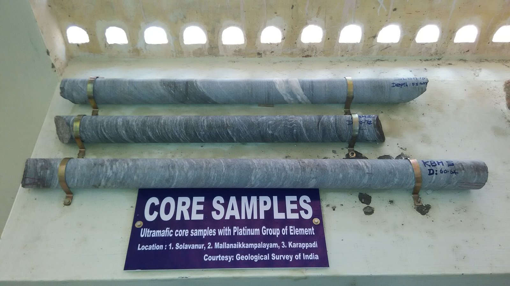
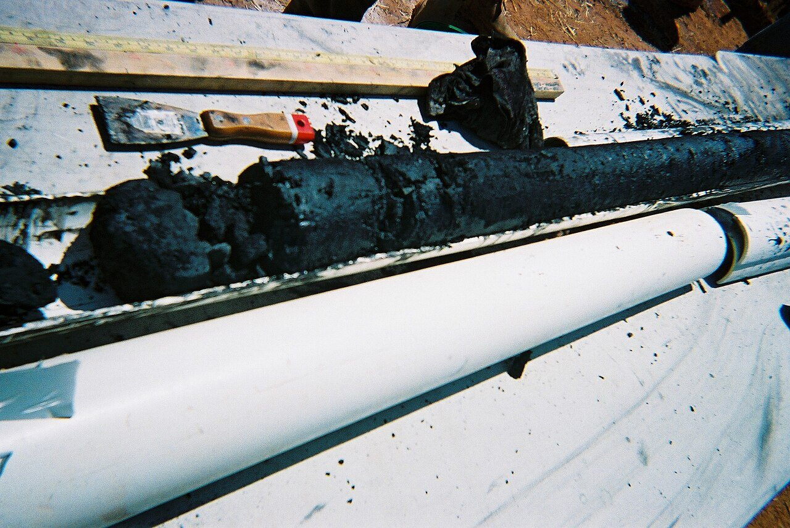
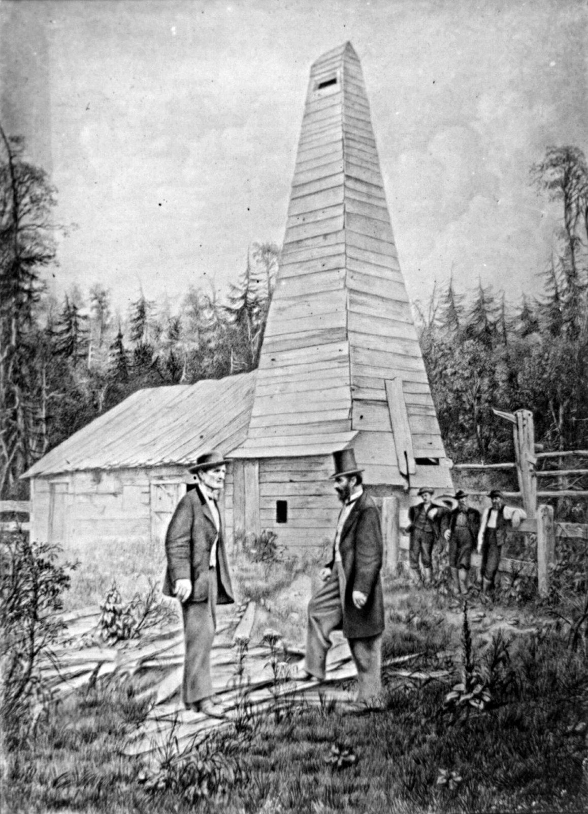

Chapter 18 — Testing a Well
Completing a well often costs more than drilling it. After the hole is cut, logs and tests decide whether pay is worth steel, cement, and stimulation. This chapter is the toolkit: cuttings to wireline families to DST—and how those objects show up for a data engineer.
Learning goals
- Contrast sample/mud logs with wireline and LWD depth logs.
- Read typical track roles: GR/SP, resistivity, density–neutron, sonic.
- Explain gas effect, invasion, and open-hole vs cased-hole limits.
- Describe DST packer isolation and what RFT/WFT adds.
Sample (lithologic) log and cores
A sample / lithologic log is a strip describing each layer: header (operator, well, location), depth track, rock symbols (sand yellow, limestone blue, shale gray, coal black), plus texture, color, grain size, sorting, cement, porosity, oil stain, microfossils.

{kind=link}

{kind=link}
Data come from cuttings on the shaker—sampled every ~10 ft (3 m), down to ~1 ft in pay. Wash, bag, examine under loupe; oil stain confirmed with UV light (fluorescence varies with °API). Lag time matters: cuttings are not from “this meter now.” Measure lag with a tracer or pump rate × hole volume (rule of thumb in notes: ~8" hole ≈ 10 min per 1,000 ft). Wrong lag → wrong depth on the show.
Core is the most faithful reservoir sample: cylinder ~1¾–5¼" diameter, often 20–90 ft (up to ~400). Trip out, run hollow coring bit and core barrel (inner barrel stationary; core catcher). Expensive—usually only pay, and only a few wells per field. Empty barrel in broken/loose rock can ironically mean good reservoir (could not catch it). Oriented cores mark north; native-state sleeves preserve fluids; lab slabs and plugs measure φ and k.
Sidewall cores after drilling: percussion bullets (~30 shots—may crush grain and bias φ/k) or rotary sidewall bits (less alteration). Small (~1" × 1¾")—lithology checks, not full lab plugs. Old driller’s logs crudely separated limestone/sand/shale.
Drilling-time log
ROP in min/ft or min/m on the geolograph—real-time. Depends on RPM, WOB, bit type, and rock; hold parameters steady and rock dominates. With tricones (notes): sand faster, shale medium, carbonate slower. A drilling break (sudden ROP change) flags a bed boundary or porous zone. In WITSML this is the ROP channel—without rig state (on-bottom vs connection) breaks lie.
Mud log
Chemistry and eyes on mud + cuttings hunting shows above background. Service company trailer, geos on 12-h tours, 24/7. Sample from gas trap at shaker + cuttings. API-style format: depth track + sample description; ROP left; gas/oil right—total gas curve, C1–C5 chromatograph, black bars for visible oil stain. This is WITSML mudLog. Gas also has lag—what you smell now left a deeper meter minutes ago.

.jpg){kind=link}
Wireline well logs — overview
A sonde on armored wireline runs after drilling (French invention ~1925; US ~1930). Condition the hole, trip out pipe, logging truck arrives. Tool ~27–60 ft (sometimes ~90), 3–4" OD; arms press to wall or centralize. Measure while pulling up. Deviated >45° or horizontal: push with pipe/tubing or a tractor. One trip = a logging run; digital to truck, then cleaner final print.

Tap a numbered pin to explore the figure.
{kind=link}

{kind=link}
Format: header + central depth track. Depth datum KB, DF, or GL—mixing datums shifts every top. Track 1 left: usually SP or GR + caliper. Tracks 2/3: resistivity, density, neutron, sonic. Scales across the top; a kick is a big deflection. Vertical scales: correlation ~2"/100 ft; detail 5"+/100 ft. Most are open-hole; some run cased-hole (GR and neutron yes; classic resistivity no). Compensated tools correct for irregular hole.
Electrical, induction, laterolog, SP
Old electric log: electrodes, inject current, read resistivity R. Short normal (~16") picks bed tops; long normal (~64") looks beyond the invaded zone (~0–100" of filtrate) toward true pore fluid. Brine conducts (low R); oil, gas, and fresh water do not (high R—kick right). Oil vs gas need other curves. If porosity is steady, OWC/GWC can be an R kick; with brine R + porosity you estimate oil saturation.
SP (spontaneous potential) still used: surface electrode + downhole electrode. Where permeable reservoir meets shale, filtrate salinity vs formation water creates voltage. Track 1: left = potential reservoir; right = shale / tight sand / dense limestone. Shale: SP right + R left (both toward center). Tight sand/dense lime: SP right + R right—SP+R alone cannot separate those two. Picks on deflections correlate wells.
Induction for freshwater, oil-based, synthetic, or air muds (coils induce currents). Laterolog / guard for salty mud (focuses current). Both on track 2, logarithmic scale. Dual induction/laterolog: shallow/medium/deep see different distances—shallow ≠ deep maps invasion (a permeability clue). Microlog (tiny pad spacing) sees cake thickness—thicker cake ≈ more filtrate ≈ more permeable.
Gamma ray (GR)
Scintillation counter of natural K, Th, U radioactivity. Track 1: low left, high right. Shale (and some “hot” sands) to the right; clean sand/limestone (potential reservoir) to the left. Cheap; works open and cased. Spectral GR splits K/Th/U to avoid mistaking radioactive sand for shale. Estimates shaliness. On LWD horizontals, GR is often the lithology workhorse.
Neutron and density
Radioactive source tools (source handled carefully from the truck).
Neutron / neutron porosity: fast neutrons slow down on hydrogen (in pore water, oil, gas). More H → higher apparent porosity if you assume liquid-filled pores. Track 2: porosity % (high left, low right often). Gas (less H per volume) reads too-low porosity. Works open and cased; compensated versions fix bad hole.
Formation density (FDL / gamma-gamma): gammas absorbed by dense atoms → bulk density → lithology + porosity. Matrix densities (0% pore): salt ~2.16, quartz ~2.65, limestone ~2.71, dolomite ~2.87 g/cc. Porosity often computed assuming limestone matrix (adjust for sand/dolomite). Gas tends to make density porosity read high (gas is light). Best practice: calibrate neutron + density to field cores.
Gas effect
In gas: neutron porosity reads low; density porosity reads high → curves cross over on track 2 = gas effect (with corrections for true porosity). This is a depth-log gas flag—not the mud log’s total gas units.
Caliper, sonic, dipmeter, NMR, imaging
Caliper: arms track hole diameter (track 1). Hole = bit size + washout + cake. Shale/coal wash wide; well-cemented sand/lime stay near gauge; salt + fresh mud can cavern. Uses: cement volume, compensate other logs, thick cake → permeable zone.
Sonic / acoustic: Δt (µs/ft) between receivers. Solids fast; fluid/gas-filled pores slower. Order of magnitude: shale slower, sand faster, lime/dolomite fastest; gas very slow. With known lithology → porosity. Misses fracture porosity (fractures attenuate); sonic amplitude helps detect fractures.
Photo-electric factor (Pe) with density = litho-density log (mineralogy: lime vs dolomite vs sand).
Dipmeter: multi-arm resistivity + gyro → bed dip and azimuth (tadpole plots).
NMR: hydrogen relaxation → So, Sw, total/effective porosity, perm hints, movable fluid, irreducible water, gas, residual oil—“will it flow,” not just % void.
Imaging: resistivity button pads or ultrasonic echoes → thin beds, unconformities, natural vs induced fractures, vugs, strike/dip.
Quick-look / computed logs: truck or data center Sw, porosity, lithology fractions, fractures, TVD.
Mental checklist: SP/GR = is there reservoir? Deep R = what fluid? Neutron+density = porosity and gas effect. Caliper = hole/cake. Sonic = porosity/lithology/fractures. Pe = mineral.
MWD and LWD
Wireline is after. MWD/LWD ride above the bit while drilling. Power: mud turbine or batteries. Telemetry: mud pulse pressure waves to a surface transducer.

Tap a numbered pin to explore the figure.
{kind=link}
- LWD: resistivity, GR (natural/spectral), density, neutron, NMR, caliper—same families as wireline, near real time.
- MWD: toolface, azimuth, deviation, torque, WOB, temperature, pressure—the path from Ch 17.
Geosteering: lateral drifting out of a thin target (sometimes only ~7 ft). LWD feels top/base (often GR/Res); MWD says where the bit points; steerable corrects. Floor time log (ROP, WOB) ≠ LWD/wireline depth log (rock vs MD)—both coexist in WITSML as different logs.
Drillstem test (DST)
A temporary completion while mud still fills the hole. Run drillstem with packer(s), perforated pipe, gauges, valves. Packer isolates the zone from the mud column; open the valve—formation fluid enters the drillstem. Bottom zone: one packer; higher zone: straddle packers. Gas often reaches surface (measure/flare); oil may flow or only rise partway up the pipe. Multiple open/shut periods → pressure buildup → permeability, reservoir pressure, skin. Duration: ~20 min to 3 days (longer = more certainty = more rig time). Open-hole or perforated cased; avoid unconsolidated sand. Mostly exploration wells.

{kind=link}
Repeat formation tester (RFT / WFT)
Wireline tool: pad/valve presses against the wall; fluid enters; pressure vs time → perm estimate. Sample chambers collect fluid for Rw and Sw. Repeat at many depths in one well.
Key terms
- Lag time
- Delay for cuttings/gas to reach surface.
- Wireline log
- Cable-conveyed depth log after (or during a trip).
- GR / Res
- Shale indicator / fluid indicator curves.
- Gas effect
- Density–neutron crossover in gas.
- Invasion
- Mud filtrate displacing near-wellbore fluids.
- LWD / MWD
- Logging vs measurements while drilling.
- DST
- Drillstem test with packer isolation.
- RFT / WFT
- Wireline formation tester for pressure/samples.